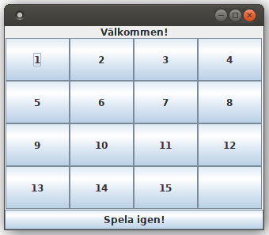
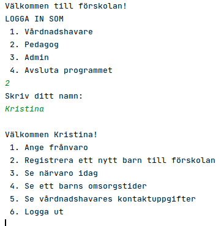

Portfolio
Lista över ett urval av tidigare projekt
- Femtonspel: en kursare och jag gjorde ett femtonspel.
- Förskolasystem: i en grupp byggde tre kursare och jag ett närvarosystem för en förskola.
- Musikskola: bredvid studierna håller jag på att bygga ett system för en musikskola, där lärare kan arbeta med informaton från en databas.
Bilder från tidigare projekt
Jag tycker mest om att arbeta textbaserat i Java, men här är ett par bilder från mina projekt.


Hitta mig på andra ställen på internet!
LinkedIn
GitHub